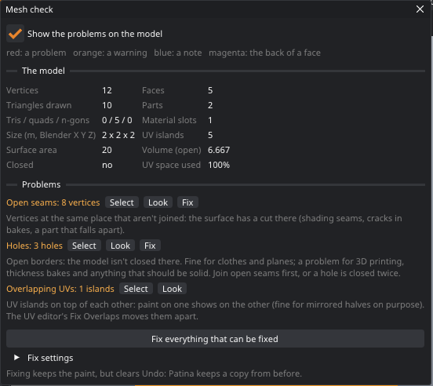
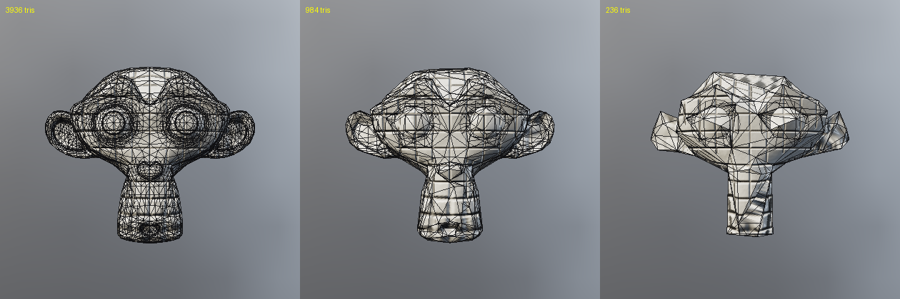
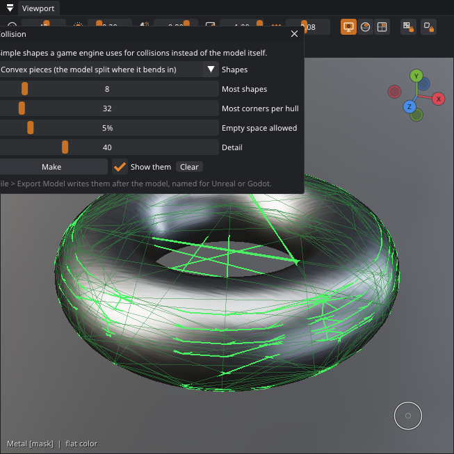
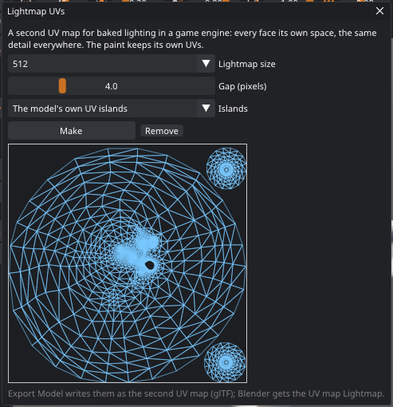

Checking, mending, reducing and exporting models
Before a model goes into a game engine, a printer or a render, it is worth knowing what it is made of and what is wrong with it. The Mesh Check tells you both, shows the problems on the model, and mends the ones that can be mended without touching your paint. It is the first of Patina's tools for finishing models made in Blender, scanned or generated: post-process your models the way you would a photo.
The Mesh Check window
Open it with Mesh › Check Mesh…. The top half lists the numbers: vertices, faces (triangles, quads and n-gons), the triangles an engine draws, separate parts, material slots, UV islands, the size in meters along Blender's X, Y and Z, the surface area and volume, whether the model is closed, and how much of the UV square it uses.

Below are the problems, worst first. Each says how many there are and what it means. Select selects its faces (for example to make an island of them or to look at them in the UV editor), Look turns the view to the first one, and Fix mends it. Tick Show the problems on the model to color the faces: red for a problem, orange for a warning, blue for a note. The back of any face shows magenta, which makes flipped faces easy to spot.
| Problem | What it is | Fix |
|---|---|---|
| Non-manifold edges | Edges shared by three faces or more. Engines, printers and bakers can't tell inside from outside there. | Mend it in Blender |
| Flipped faces | Faces turned the other way from their neighbors: dark or see-through in engines, broken bakes and smoothing. | Turns them like their neighbors |
| Inside-out parts | Closed parts whose faces all point inwards. | Turns them to face out |
| Open seams | Vertices at the same place that aren't joined: a cut in the surface. | Joins them (within the weld distance) |
| Holes | Open borders. Fine for clothes and planes; a problem for printing and solid models. | Closes each hole up to a size with a face |
| Bowtie vertices | Fans of faces that only touch at one vertex. | Mend it in Blender |
| Degenerate faces | Faces with no area, or the same corner twice. | Removes them |
| Duplicate faces | Two faces on the same corners: they flicker and double the paint. | Removes one |
| Specks and floaters | Tiny separate pieces, under 3% of the model's size: leftovers of scans and generated models. | Removes them |
| Faces without UV space | Faces whose UVs have no area: paint can't show on them. | Unwrap them |
| Overlapping UVs | Islands on top of each other: paint on one shows on the other (fine for mirrored halves on purpose). | UV › Fix Overlapping UVs |
| Loose vertices | Vertices no face uses. | Removes them |
| Very small / very large | A model under 5 mm or over 500 m long, usually exported in the wrong units. | Rescale it in Blender |
Fixing
Fix everything that can be fixed (also in the Mesh menu) does all the fixes at once, in the right order: it joins open seams before it closes holes, so a seam isn't capped twice. Fix settings sets the weld distance (automatic: a hundred-thousandth of the model's size) and the biggest hole to close.
A fix makes a new mesh: UVs, material slots, seams and vertex groups stay with their faces, and Patina moves the layers' paint over, as it does when you update a mesh from Blender. A new face closing a hole takes its border's UVs, so it shows the texture next to it until you unwrap it.
Fewer polygons
Mesh › Reduce Polygons… takes a model down to a share of its triangles, for games, the web and AR. Choose how much to keep; the window says how many triangles that leaves and how far the shape moves (as a share of the model's size) before you click Reduce. The UV layout stays: UV seams and the borders between material slots don't move, and every corner that is left keeps its UV, so the textures fit as they are and nothing is repainted. Keep open borders holds the edges of clothes, planes and cut-offs in place. The result is triangles.

As with a fix, reducing clears the undo history, and Back to before the reduction returns to the model as it was. A reduced model linked to Blender goes back with Send Model to Blender.
Levels of detail
In File › Export Model…, Levels of detail adds lighter copies of the model, each with half the
triangles of the one before. They share the model's textures. In glTF they are meshes named name_LOD0,
name_LOD1… (the full model carries the MSFT_lod extension, which some engines read); with OBJ they
are name_LOD1.obj… beside the model. Unity, Unreal and Godot all recognize the _LOD names.
Exporting the model
File › Export Model… writes the model with its textures, ready for a game engine, a web viewer or another 3D program:
- GLB: one file with the textures inside. Three.js, Babylon.js, Godot, Unity (with glTFast), Unreal (with its glTF importer), Sketchfab and Blender read it.
- glTF: the same as a
.gltffile with a.binand PNG files beside it. - OBJ:
.objand.mtlwith PNG maps (base color, roughness, metallic, normal, glow, and opacity when used). Faces keep their quads and n-gons. - STL: the shape alone, for 3D printing, in millimeters with Z up (one meter in Blender is 1000 mm). Mend the model first so it is closed; the 3D print recipe does that, stands it on the ground and exports it.
- PLY: the model with its base color as vertex colors (one color per corner, read from the textures), with UVs and normals, Z up in meters as Blender reads it. For color 3D printing and programs that use vertex colors. Faces keep their quads and n-gons.
Each texture set or UDIM tile becomes a material of its own (glTF has no UDIM tiles, so each tile's UVs are moved
back into the square). The glTF material has the base color (with opacity in its alpha: Mask when the opacity
is all solid or cut out, Blend when it has partly see-through parts), metallic and roughness, the normal map,
glow, ambient occlusion when baked, and sheen and clearcoat (the KHR_materials_sheen and
KHR_materials_clearcoat extensions) when the texture set uses them. Textures picks the texture size.
Collision shapes
A game engine does not collide against the model itself, which is far too detailed: it uses a few simple, convex shapes around it. Mesh › Collision… makes them and shows them in green over the model; File › Export Model writes them after the model, named the way the engine looks for them.

| Shapes | For |
|---|---|
| Convex pieces | Anything that bends in: chairs, arches, rings, characters. The model is split where one hull would hold too much empty space. The closest fit. |
| A hull per separate part | Models made of separate parts: kits, furniture, a car and its wheels. |
| One convex hull | Rocks, bottles, round props. |
| A box per separate part, One box | Crates, books, walls. The cheapest for the engine. A box is upright unless a turned one is clearly smaller. |
Most shapes limits how many (more fit closer but cost the engine more: 4 to 16 is usual for a prop). Most corners per hull keeps each hull simple (engines like 32 or fewer). For convex pieces, Empty space allowed sets when a piece is split again (lower: more, closer pieces), and Detail how finely the model is looked at. After Make, the window says how many shapes there are and how much more they hold than the model (under 20% is a close fit). The shapes belong to the mesh as it is: after a fix, a reduction or a transform, make them again.
In Export Model, Collision names them for Unreal (UCX_ before the model's name for
hulls, UBX_ for boxes: Unreal uses them as the mesh's simple collision), Godot
(-convcolonly at the end: Godot 4 turns each into a convex collision shape) or with plain names (Unity has
no naming rule: add a Mesh Collider set to Convex on each). GLB, glTF and OBJ carry them. The Game asset
recipe makes convex pieces and exports them for Unreal.
Lightmap UVs
Game engines bake their lighting (shadows, light bouncing between surfaces) into a lightmap, a texture laid over the model through a second UV map. That map has stricter rules than the one the paint uses: no face may share space with another (mirrored and stacked islands, fine for painting, are not allowed), the detail should be the same everywhere, and the islands need a gap between them so light does not bleed across. Mesh › Lightmap UVs… makes it.

- Lightmap size: the size the engine will bake at (Unity and Unreal often use 64 to 1024 per object). The gap is measured in its pixels.
- Gap: pixels between islands. 2 to 4 is usual; a small lightmap needs the larger gaps.
- Islands: The model's own UV islands, repacked, keeps the shapes the paint uses (best for models with clean UVs; islands that fold over themselves are unwrapped again). New ones made for lightmaps asks xatlas, the unwrapper Godot uses, for new islands: for scans and generated models whose UVs are a mess. It takes a while on dense models (half a minute for 100,000 faces): reduce them first.
The paint's UVs do not change. The lightmap UVs are saved with the project, written to GLB and glTF files as the
second UV map (TEXCOORD_1, which Unity, Unreal and Godot use for lightmaps), and a model sent to Blender
gets them as the UV map Lightmap. Opening a glTF that has a second UV map keeps it. A transform keeps them; a
fix or a reduction changes the faces, so make them again. The Game asset recipe makes them before it exports.
Sending the model to Blender
Blender › Send Model to Blender as a New Object gives Blender the model as it is in Patina, for example after a fix: a new object, name_patina, next to the linked one in its place and collections (or at the world origin for a model opened from a file), with its UVs, material slots, seams and vertex groups, and Patina's material on it. Patina links to the new object from then on, so painting and Send textures to Blender go there. Replace the Linked Object's Mesh gives the linked object Patina's mesh instead (its modifiers stay; Undo in Blender goes back). After a fix on a linked model, the Mesh Check window has a Send the mended model to Blender button. Both need Blender's live link and the 0.9 add-on.
From Claude and scripts
mesh_check returns the numbers and problems (with places in Blender's axes, and each problem's faces on
request), mesh_fix mends (all, or the fixes one by one, with weld_distance,
small_part_size and fill_hole_edges), and mesh_fix_revert goes back. The
mesh_check view mode shows the heat map. mesh_reduce reduces (with preview to only
count), export_model writes the model with its textures (lods for levels of detail), and
send_model_to_blender sends it to Blender. See Commands.